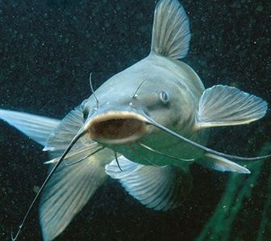

Descripción de su hábitat y estilo de vida:
Habitat: Presas, lagos y ríos con aguas claras y sombreadas, fondos de arena o grava. Tiene hábitos nocturnos
para buscar alimento, regularmente en zonas someras. Durante el día se les encuentra en las áreas profundas de los cuerpos de agua.
Alimentación en medio natural: Omnívoros de hábitos nocturnos. Se alimenta de crustáceos, pequeños peces, algas, insectos y plantas.
Alcanzan la madurez sexual a los tres años de edad con peso aproximado de un kilogramo, aunque algunos pueden desovar a los dos años.
Características:
- En su cuerpo tienen espinas punzantes y retráctiles en la parte anterior de su aleta dorsal y pectoral. Estas espinas son de gran utilidad en los ecosistemas
naturales cuando son atacados por algún tipo de depredador.
- Una característica especial del pez bagre es que tiene una piel muy dura y no posee escamas.
- Dependiendo de la especie nos podemos encontrar con algunos tamaños diferentes que van desde los 50 centímetros hasta los 2 metros de longitud. Realmente
puede llegar a ser muy grandes.
- El pez bagre más grande jamás registrado tenía unas dimensiones de 3 metros de longitud y 250 kilos de peso.
- Se le llama también pez gato porque tienen unos bigotes formados de tentáculos en la boca que se asemejan a los bigotes de los gatos. Estos bigotes son
llamados barbillones filamentosos.
volver al inicio